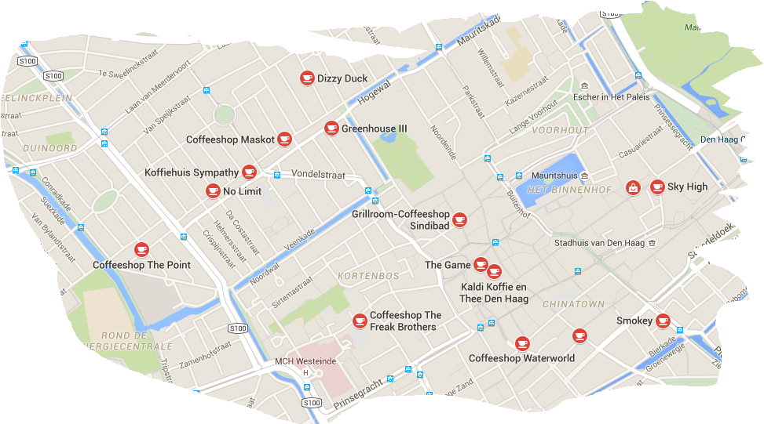
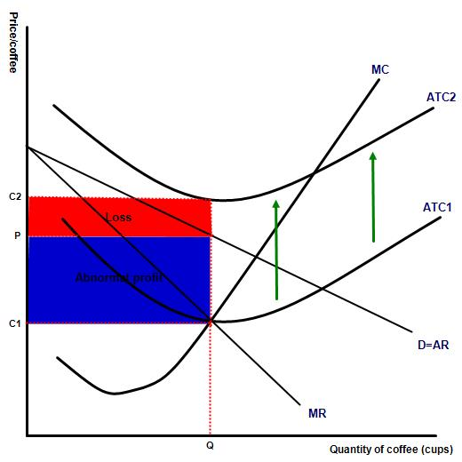
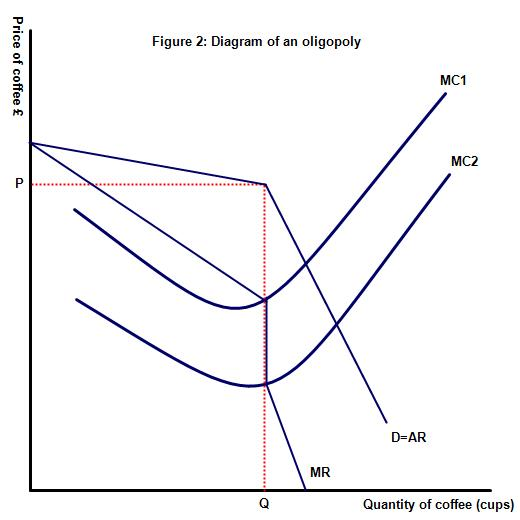
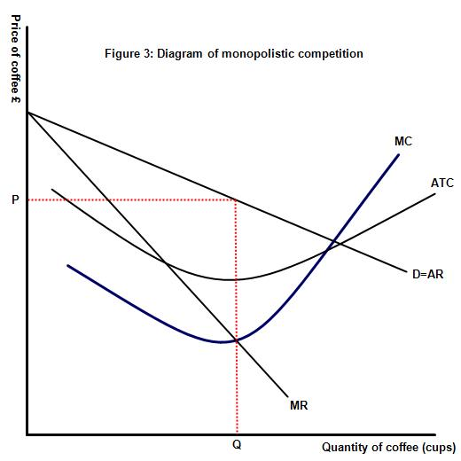

IB Docs (2) Team
IB Docs (2) Team

Exemplar extended essay
Classroom activity
This page includes a near perfect example of a near perfect essay. The student starts by collecting a significant amount of data and then relates their findings to an established economic model. It is hard to find any weaknesses in the essay. This section also includes three other sample essays, of varying degrees.
Read the extended essay below, which came from one a former economics students. After doing so, apply the extended essay rubric and justify your marks. My comments are on the next page as well as an annotated copy of the EE.
Title: To what extent are pricing decisions in coffee shops in Sevenoaks interdependent?
Word count: 4000 words
Contents
Introduction.......................................................................................................................................................................... 3
Research method................................................................................................................................................................. 5
Theoretical hypothesis......................................................................................................................................................... 7
Pricing decisions based on demand.................................................................................................................................... 7
Pricing decisions based on costs......................................................................................................................................... 8
Pricing decisions based on interdependence..................................................................................................................... 10
Conclusion.......................................................................................................................................................................... 12
Research findings............................................................................................................................................................... 13
Data on quantity.................................................................................................................................................................. 13
Data on prices..................................................................................................................................................................... 14
Calculating interdependence through finding price range................................................................................................... 15
Calculating interdependence through use of an equation................................................................................................... 17
Conclusion........................................................................................................................................................................... 23
Bibliography......................................................................................................................................................................... 25
Introduction:
Each day in the UK, 95 million cups of coffee are consumed1. In Sevenoaks eight specialised coffee shops2 less than 500m apart3 have agglomerated in the centre of town (Insert 1) to satisfy this demand. The emergent market resembles both monopolistic competition and an oligopoly due to the varying influence and large number of shops. This means there is ambiguity in the relationship between the coffee shops and their interactions over price. An oligopoly is a market structure in

which a small number of large firms dominate the market4. Whereas monopolistic competition is a structure where many small businesses sell similar, yet slightly differentiated, products5.The coffee shops that I will focus on for the purpose of this essay are: Costa Coffee, Eat ‘n’ Mess, Basil, Nonna’s Cappucinis, Café Nero, Malabar, Darcey’s and Otto’s. Their locations are shown on the map to the right.
Therefore, I decided on the question: ‘To what extent are pricing decisions in coffee shops in Sevenoaks interdependent?’. This study will highlight the inevitable interdependence commonly found in markets. As interdependence is commonplace in oligopolies, it is important to understand its significance and effects for both consumers and producers, as it affects all in an oligopoly. As this study is centred in the area where I go to school, it is particularly important for me to understand the extent of interdependence in the area and how this will affect my daily life. Interdependence, where businesses set their prices according to each other6, usually has a beneficial impact on consumers, as businesses often lower prices to attract more quantity demanded (Qd) and other firms follow. However, all firms will offer very similar prices and therefore if the offered price is high, consumers have no alternative. This is a clear microeconomic problem as individual consumers are powerless to the group decisions of businesses which dominate a market and are forced to pay a certain price for a good or service. The interdependence of firms in an oligopoly can be modelled through game theory. However, game theory can only hypothesise the level of interdependence and not calculate it numerically. I aim for this study to provide an objective, not theoretical, perspective of the market. Therefore, I will instead use a basic method of analysing prices to conclude on the interdependence of this market as a whole and then use an equation to determine the strength of the interdependence and where it occurs in more detail.
1 Sarah Young. 2018. UK coffee week 2018: Brits now drinking 95 million cups of coffee a day, survey finds. Independent.
2 2019. Cafes in Sevenoaks. Tripadvisor.
3 2019. Sevenoaks. Apple Maps.
4 Tejvan Pettinger. 2017. Oligopoly. Economics Help.
5 Prateek Agarwal. 2019. Monopolistic competition. Intelligent Economist.
6 2015. Interdependent Prices. Economicsconcepts.com.
Research method:
Due to the focused and local context of the question which I am answering, I realised there will be very few secondary sources capable of directly answering the question. Therefore, a large proportion of the raw data I will use will be from primary research I carried out in coffee shops. To collect reliable data, I went to all the coffee shops in Sevenoaks and interviewed the managers. I created a short list of questions (Insert 2) to ensure that I would ask identical questions at each interview, so the results were standardised. After interviewing at a few shops, it became apparent that they were either not willing or not able to disclose the exact quantity of hot drinks they sold and thus I had to instead ask for an average quantity, which will not be as accurate but is still viable to use in calculations. Interviewing managers is much more reliable than asking the baristas to complete a questionnaire. However, the results gained from this method are liable to be affected by the manager’s desire to portray their shop in a positive and competitive light, meaning they may declare falsely large quantities. This is the key problem with interviews, as I must trust their responses, which may be falsified, as there is no other way to gain accurate data.
After gaining this primary data, I will use it to prove interdependence through comparison and calculations although reliable secondary sources are imperative to interpret and validate my results. Secondary sources could however portray false information. I will therefore only use well cited secondary sources from economics textbooks or websites to ensure reliability. If the data is on coffee shops however, I will use data from a large, coffee focused website. By using a large range of sources, the effect of an incorrect source is minimised.
Insert 2
What is the average daily quantity of hot drinks you sell?
What are your prices of four common hot drinks: Americanos, Lattes, Cappuccinos and English Breakfast tea?
How many people work in your shop at one time?
It is necessary to use an equation in order to calculate the numerical value of the interdependence and determine its strength in pricing decisions. I plan on using an equation derived by Sigbjørn Atle Berg and Moshe Kim in order to calculate the interdependence. I chose to use this equation as it is from one of few models created for an oligopolistic market and furthermore, I found it attractive as it is based on a model tested on the coffee industry7.
7 Frank Gollop, Mark Roberts. 1979. Firm interdependence in oligopolistic markets. Journal of Econometrics, Volume 10, Issue 3.
Theoretical hypothesis:
There are three main options profit-maximising businesses have when deciding on pricing decisions, with the emphasis placed on each affecting the level of interdependence.
Pricing decisions based on demand:
The first is by responding to demand. As businesses rely on customers to purchase their products in order to make a profit, most companies set their prices at a level which is attractive to customers. As the law of demand states, as prices decrease, Qd increases as people generally want to spend less money and so purchase more when products are cheap. Therefore, companies often set the lowest possible prices in order to attract more Qd and thus increase revenue. However, after a certain point, the loss of revenue caused by a decrease in price is not matched by the increase in revenue from the associated increase in Qd, meaning there is a point of profit maximisation. Companies will not lower prices beyond this point if they are aiming to maximise profits. As prices in coffee shops are considered high, at £3.33 for a cappuccino on average8, but Qd remains high, demand will clearly not be a major priority and so will not have as large an effect on pricing decisions as expected meaning interdependence will be emphasised.
8 Hristina Byrnes. 2019. The price you’ll pay for a cup of coffee around the world. USA Today.
Pricing decisions based on costs:

Another restriction on pricing decisions is costs. Business is not sustainable if price is below average total cost (ATC), the cost per unit of output, in the long run as they will spend more money than they make and thus make a loss (Figure 1). Costs set a lower limit to pricing decisions as they dictate the lowest price at which profit-incentivised companies can set their prices. In the coffee industry, the cost of making a cup of coffee is £19, whereas the average price of a cappuccino is £3.3310, clearly much higher than the cost to make it. The large difference between cost and price shows that costs are not significant in coffee shops’ pricing decisions. These high prices also highlight a factor which reduces interdependence’s significance. In the coffee shop industry, despite there being a clear oligopoly creating the centre of the market structure, consisting of chain firms Costa and Café Nero, the smaller shops have a structure resembling monopolistic competition. Here, independent decision making is assumed, as no shop is large enough to influence the market individually, so firms don’t have to match each other’s prices. In the case of coffee shops in Sevenoaks, these smaller shops have tailored a unique and artisanal experience to attract customers as the shops are an area to meet friends, instead of coming purely for drinks, and thus charge more. This means that interdependence may be lower than expected in this industry as shops are not forced to match prices of other shops as each shop has its own unique selling point.Figure 1: (Above and to the right) Diagram to show how loss and profits are achieved in monopolistic competition
9 The Secret to Real Profits in a Cup of Coffee. Café Coach.
10 Hristina Byrnes. 2019. The price you’ll pay for a cup of coffee around the world. USA Today.
Pricing decisions based on interdependence:

The final major factor affecting pricing decisions is interdependence. In such an intense market as coffee shops in Sevenoaks, with eight shops very close to each other selling almost identical products, it could be assumed that price will be the main determining factor for Qd. This would mean that interdependence would be high, as due to high competition in supply, it would be necessary for companies to review each other’s prices and set their own prices similarly, otherwise they will be undercut. However, in the market of coffee shops in Sevenoaks, as already explained, the artisanal nature of the shops means that they can charge higher prices as they are providing an experience, not just drinks.Furthermore, the graph of an oligopoly has a kinked demand curve (Figure 2), with firms producing at the kink in the curve which occurs at current output and price. If a fi 
Conclusion:
Overall, as costs are clearly not significant in coffee shops’ pricing decisions and Qd is always high, interdependence will be very significant in pricing decisions. I predict high levels of interdependence among the oligopoly and between the oligopoly and monopolistic competition, but little interdependence within the monopolistic competition. This is because the large shops will be able to influence the market and force other shops to follow their prices, otherwise they will lose their customers to the lower prices. However, as the smaller shops are artisanal and are in monopolistic competition, it is unlikely there will be much interdependence between them as they are too small to affect each other. Therefore, I believe there will be clear interdependence between some shops but not as much as is expected for such a competitive market.
Research findings:
Data on quantity:
The first information I gained was the average quantity of hot drinks sold per day (Table 1). This data is essential as it confirms the market structure which I previously speculated. Costa and Café Nero dominate the market in terms of sales and thus form an oligopoly with their percentage share of the market being 77.5% of the total market which surpasses the requirement of a clear oligopoly11. The rest of the market structure is clear as the small shops all sell similar quantities and there is an Herfindahl–Hirschman Index (HHI) of 3298, calculated by squaring each shop’s percentage share and summing them all together12. A lower index means a more competitive market13 and compared to the high percentage share of the market of the two largest shops, this HHI is low, showing there is strong competition among the smaller shops as well. This proves that there is monopolistic competition in the market between the smaller shops. As the shops are too small to directly affect the market14, interdependence may be reduced as a price change by one shop will not influence enough consumers to force other shops to follow.
11 2016. Measuring Concentration in Oligopoly. Open Textbooks for Hong Kong.
12 Oligopoly – Definition and Meaning. Market Business News.
13 2018. Herfindahl–Hirschman Index. The United States Department of Justice.
14 Prerequisites of Oligopoly. Lumen.
Table 1: Table to show the average quantity of hot drinks sold per day and market share of different coffee shops
Name of coffee shop | Average quantity of hot drinks sold per day | Percentage share of market /% |
Costa | 2000 | 48.4 |
Café Nero | 1200 | 29.1 |
Malabar | 300 | 7.3 |
Darcey’s | 200 | 4.8 |
Basil | 175 | 4.2 |
Otto’s | 130 | 3.2 |
Nonna’s Cappucinis | 75 | 1.8 |
Eat ‘n’ Mess | 50 | 1.2 |
Data on prices:
With the market structure being confirmed by the above data, I am now able to determine how interdependence, and therefore pricing decisions, varies with market structure within the Sevenoaks market. Table 2 shows the prices of four common hot drinks at different coffee shops in Sevenoaks however this raw data cannot directly answer the question.
Table 2: Table to show the price of four hot drinks sold in different coffee shops
Name of coffee shop | Price of americano / £ | Price of English Breakfast tea / £ | Price of cappuccino / £ | Price of expresso / £ |
Costa | 2.40 | 2.10 | 2.75 | 2.00 |
Café Nero | 2.45 | 2.10 | 2.75 | 1.85 |
Malabar | 2.50 | 2.25 | 2.90 | 2.20 |
Darcey’s | 2.20 | 2.35 | 2.35 | 2.45 |
Basil | 2.60 | 2.50 | 2.60 | 2.50 |
Otto’s | 2.60 | 2.60 | 2.90 | 2.40 |
Nonna's Cappucinis | 2.40 | 2.20 | 3.00 | 2.50 |
Eat ‘n’ Mess | 2.40 | 2.50 | 2.70 | 2.20 |
Calculating interdependence through finding price range:
The first method allows the interdependence of the whole market to be shown. By finding the average price of four hot drinks each shop is selling and then by finding the range of these averages (Table 3) I will be able to show the interdependence of the whole market.
Table 3: Table to show the average price of different coffee shops and the range of these average prices
Name of coffee shop | Average price of four hot drinks / £ |
Costa | 2.31 |
Café Nero | 2.29 |
Malabar | 2.46 |
Darcey’s | 2.34 |
Basil | 2.55 |
Otto’s | 2.63 |
Nonna’s Cappucinis | 2.53 |
Eat ‘n’ Mess | 2.45 |
Range | 0.34 |
It is evident that the prices seem relatively closely linked, the range being 34p. However, by calculating the average price of all shops in the market (£2.44) and then finding the range as a percentage of that (14.0%) the difference in price is clearer to see. Prices only vary by 14% in relation to the market, so are relatively close together and therefore interdependence is quite high. However, I expected interdependence to be higher as the market is so competitive with eight shops within 500m. The lack of very strong interdependence is caused by two factors. Firstly, the smaller shops are not able to lower prices beyond a certain point as they do not have economies of scale, the cost advantages a business gains from increased production15, like the large shops, so can’t match the low prices, leading to less interdependence. Secondly, it would be assumed in economics that due to the cheaper average prices of £2.31 and £2.29, at Costa and Caffe Nero respectively, consumers would purchase from these shops, however this doesn’t consider the current trends and personal preferences of customers. Due to consumers looking for an experience and not just coffee, it would take a significant lowering of price from the large shops to entice consumers to move away from the smaller shops. This means smaller shops do not have to follow the prices of the larger shops as they do not have to fear their customers moving to different shops, causing interdependence to be lower than expected.
15 Jim Riley. Economies of scale. Tutor2u.
Calculating interdependence through use of an equation:
The second and more accurate method of measuring interdependence is with an equation. I will use an equation taken from a study of oligopolistic interdependence in the banking market called Oligopolistic Interdependence and the Structure of Production in Banking: An Empirical Evaluation16. This study creates a model which aims to factor the oligopolistic structure of the banking market into the conventional production model17. However, my study is focused on interdependence and therefore, I did not use the whole model but instead selected an equation which allowed me to calculate a numerical value for interdependence. I selected an equation which contained the conjectural variation (CV) of a firm. CV is when each firm in an oligopoly forms expectations of other firms’ reactions to a change in their own price or quantity18. This can be viewed as similar to interdependence as it shows us how a firm will react to another firm and thus show if they are interdependent. There is a simple method of calculating CV through the use of an equation however this requires both the marginal cost and the slope of the inverse demand function20, neither of which I have, as it is a more theoretical equation. Therefore, I found a practical equation that had been thoroughly tested and backed up by credible sources such as Firm Interdependence in Oligopolistic Markets, a model cited by 264 papers19 and which analyses the coffee industry.
16 Sigbjørn Atle Berg, Moshe Kim. 1994. Oligopolistic Interdependence and the Structure of Production in Banking: An Empirical Evaluation. Journal of Money, Credit and Banking. Vol. 26 No. 2 pg. 309.
17 Sigbjørn Atle Berg, Moshe Kim. 1994. Oligopolistic Interdependence and the Structure of Production in Banking: An Empirical Evaluation. Journal of Money, Credit and Banking. Vol. 26 No. 2 pg. 310.
18 Dennis Carlton, Jeffrey Perloff. 2000. Conjectural Variations. Pearson Education.
19 2019. Firm Interdependence in Oligopolistic Markets. EconPapers.
Despite the model I am using having been tested on the banking industry, the banking and coffee shop industries have many similarities, most importantly the market structure of an oligopoly along with many smaller firms which specialise in slightly differing areas.
Equation 1 can be seen annotated below and is the exact equation from the economic model. In the study, each firm was ranked by size of output and split into several groups. j and i are two firms in group r. I will not separate the shops into groups as I need to compare all shops with each other. The groups are just a method by which to split up the data and have no effect on the actual equation, therefore I am able to use just one group.
↙marginal product
[1 − (market output) − (output of firm) ∑ PED elasticity (market) (∑ market output exc. company)] a 1− =020
↖market price
a ‘j’th firm’s conjectural variation
However, I need to calculate the CV and thus I have rearranged the equation in order to satisfy this (Equation 2). There are several modifications necessary to the equation before it can be used, however.
Firstly, the marginal product (Fk), the increase in output from one extra unit of input21, is unknown. However, every coffee shop has three workers, except for Nonna’s Cappucinis which therefore can’t be used in this equation as it had five workers. Fortunately, Nonna’s Cappucinis isn’t at either extreme of output, so the inability to analyse its data won’t affect the ability of the results to prove a trend. It can be therefore assumed that the marginal product will be the same for all shops, despite the varying firm sizes, as the capital of each shop is almost identical so with one added unit of labour, productivity will increase by the same amount for all shops. Fk therefore can be set as a constant, for simplicity I will use 1. Secondly, the input prices (wk) are unknown but as these are exogenously generated and are not related to the equation, they do not differ with each shop and so can also be replaced with a constant, again 1. Finally, I am finding the interdependence of pricing and not output, unlike this equation. Therefore, the output and pricing must be switched but the output is a summation of the total market and the price is an average. By maintaining each price as an average and each quantity as a summation however, it is possible to switch their positions in the equation, along with changing the ∑ to averages, because as long as all prices and all quantities are in the same format, they will still relate to each other correctly. Equation 3 is the edited equation I will be using. These modifications however mean that the results cannot be interpreted through comparison to a constant as CV normally is. Instead I will have to first simulate perfect interdependence by inputting the exact same prices for shops (pi = pj) and then calculate the actual value and compare the two to see how close to perfect interdependence the shops are.
20 Sigbjørn Atle Berg, Moshe Kim. 1994. Oligopolistic Interdependence and the Structure of Production in Banking: An Empirical Evaluation. Journal of Money, Credit and Banking. Vol. 26 No. 2 pg. 312.
21 2019. Marginal Product. Business Dictionary.
Cappucinis isn’t at either extreme of output, so the inability to analyse its data won’t affect the ability of the results to prove a trend. It can be therefore assumed that the marginal product will be the same for all shops, despite the varying firm sizes, as the capital of each shop is almost identical so with one added unit of labour, productivity will increase by the same amount for all shops. Fk therefore can be set as a constant, for simplicity I will use 1. Secondly, the input prices (wk) are unknown but as these are exogenously generated and are not related to the equation, they do not differ with each shop and so can also be replaced with a constant, again 1. Finally, I am finding the interdependence of pricing and not output, unlike this equation. Therefore, the output and pricing must be switched but the output is a summation of the total market and the price is an average. By maintaining each price as an average and each quantity as a summation however, it is possible to switch their positions in the equation, along with changing the ∑ to averages, because as long as all prices and all quantities are in the same format, they will still relate to each other correctly. Equation 3 is the edited equation I will be using. These modifications however mean that the results cannot be interpreted through comparison to a constant as CV normally is. Instead I will have to first simulate perfect interdependence by inputting the exact same prices for shops (pi = pj) and then calculate the actual value and compare the two to see how close to perfect interdependence the shops are.
I will run through one set of workings to show how the answer is calculated. First, the necessary values to create perfect interdependence are entered for a selected shop, in this case Costa. This means all values of other shops in the equation are replaced by the values of the selected shop. I will use the average price for each shop as this is the most reliable price to compare as it is averaged over four drinks. For market price elasticity, I will use the International Coffee Organisation’s value for the UK of -0.2522. 2.31 / (2.44 x -0.25) - 1/413 = - 0.0912
Finally, the actual result is subtracted from the perfectly interdependent result to find the difference between the two, which can be compared between shops, with a smaller difference meaning more interdependence −0.0912— (−0.0920) = 0.0008
Table 4 contains the results and shows the columns’ conjectural variation to the rows. For example, the first column is how Costa believes other shops will react to a change in its own price.
Shop | Costa | Café Nero | Otto’s | Basil | Malabar | Eat ‘n’ Mess | Darcey’s |
Costa | X | -0.0008 | 0.0110 | 0.0085 | 0.0051 | 0.0052 | 0.0012 |
Café Nero | 0.0008 | X | 0.0118 | 0.0093 | 0.0059 | 0.0060 | 0.0020 |
Otto’s | -0.0111 | -0.0119 | X | -0.0025 | -0.0059 | -0.0059 | -0.0099 |
Basil | -0.0086 | -0.0094 | 0.0025 | X | -0.0034 | -0.0034 | -0.0074 |
Malabar | -0.0056 | -0.0063 | 0.0055 | 0.0030 | X | -0.0003 | -0.0044 |
Eat ‘n’ Mess | -0.0052 | -0.0060 | 0.0058 | 0.0033 | -0.0001 | X | -0.0040 |
Darcey’s | -0.0012 | -0.0020 | 0.0098 | 0.0074 | 0.0040 | 0.0040 | X |
Table 4: Table showing the conjectural variation between all the shops in the market (the pink shows those in the oligopoly and the blue shows those in monopolistic competition, with green being the values between the groups)
22 2004. Price-elasticity of demand and coffee consumption in importing countries. International Coffee Organisation.
The results in Table 4 are quite difficult to interpret. If average CVs are calculated for each section of the market however, then my hypothesis can be concluded on. Table 5 shows the average CV for each section, using the absolute value of each CV otherwise they will cancel out. It is clear to see that the oligopoly of Café Nero and Costa have the smallest value and therefore their pricing decisions are the most interdependent which confirms my hypothesis. This is due to the high competition and that the size of the firms allows them to influence the market and have economies of scale meaning they can match lower costs and thus be more interdependent23. There is also some interdependence between the monopolistic competition and oligopoly but not as much as I expected as I thought there would have to be strong interdependence here for the smaller shops to survive in such a competitive market. Clearly the artisanal nature of the shops has a much larger effect on the market than price. My hypothesis is again confirmed in the monopolistic competition section, as there is very little interdependence as expected as the shops are too small to influence each other24.
Table 5: Table showing the average conjectural variation of each section of the market structure
Section of market | Conjectural variation |
Oligopoly | 0.0008 |
Interaction between oligopoly and | 0.0067 |
Monopolistic competition | 0.0925 |
23 2019. Oligopoly. Economics Online.
24 2019. Firm behaviour and market structure: monopolistic competition. MSU Faculty of Economics.
As CV is what a firm thinks will happen25, it could be seen as weak evidence. However, I am investigating interdependence which also relies on what firms think will happen26 and therefore CV is a perfect method by which to measure interdependence. Furthermore, in a rational market, decisions are entirely based on data and therefore it is in fact strong evidence. In addition, there are three pieces of evidence which prove my equation works.
Firstly, shops which have a high difference in average price are less interdependent according to this equation, as they should be because they are clearly not basing their prices on each other and therefore the equation is producing correct results. Secondly, if shop j increases price compared to shop i then it would also appear that shop i decreased its price compared to shop j if it is unknown which company acted first. This means the two shops will have the same CV although one will be positive and one will be negative to show how the shops respond in exactly opposite ways. These are the results that I obtained for almost all the shops. For example, the CVs between Basil and Otto’s are 0.0025 and -0.0025 which not only demonstrates the equation works but also shows that the market is relatively rational as they exactly oppose each other. There are however some results which are not exact opposites, for example the CVs between Otto’s and Malabar are -0.0034 and 0.0030. These results are clearly very similar and fall within the maximum error of 0.0069 for the model27 meaning the differences are acceptable and are due to fluctuations in the market or slight errors in the model. Thirdly, even if the equation has some flaws, because I am comparing the CV to the CV for perfect interdependence created by using the equation, then any mistakes will be in both the result for perfect interdependence and the actual CV and will be present in all of the data. This means they can still be compared, as any mistakes will affect all data the same.
25 2019. Conjectural variation. Oxford reference.
26 2019. Interdependence. Dictionary.com.
27 Sigbjørn Atle Berg, Moshe Kim. 1994. Oligopolistic Interdependence and the Structure of Production in Banking: An Empirical Evaluation. Journal of Money, Credit and Banking. Vol. 26 No. 2 pg. 318.
Conclusion:
In response to the question, ‘To what extent are pricing decisions in coffee shops in Sevenoaks interdependent?’ I hypothesised that there would be very high interdependence in the pricing decisions of the market overall, due to the high competition present as the shops are so tightly clustered. Through the data collection and analysis I carried out, it is clear to see that the market as a whole contains quite a high level of interdependence as there is a very small difference between the average prices for shops. Furthermore, the use of an equation allowed me to analyse the interdependence in more depth and it is evident that there is extremely high interdependence within the oligopolistic shops with strong interdependence between these shops and the shops in monopolistic competition. There is also relatively low interdependence between the shops in monopolistic competition, all as I hypothesised. All conclusions I have come to using primary data have also been backed up by secondary data for validation.
I was surprised however by the overall level of interdependence which I assumed would be much higher. Therefore, I’ve concluded that in this market, the smaller artisanal shops, focused on providing an experience, are able to maintain high prices, thus causing lower interdependence. This is due to current personal tastes; the experience of smaller shops outweighs the cost difference of the coffee between the small and large shops. So, overall, despite interdependence being relatively high in the market, it does not play as significant a role in pricing decisions in coffee chops in Sevenoaks as expected as price isn’t the only factor for customers visiting coffee shops.
As a result of this study, I was left wondering if interdependence is linked to the product and so is a stronger factor in other markets, regardless of the level of competition. It would also be interesting to quantify the effect that cost and demand have on pricing decisions and thus fully show how each shop decides its prices.
Bibliography:
Prateek Agarwal. 2019. Monopolistic competition. Intelligent Economist.
Sigbjørn Atle Berg, Moshe Kim. 1994. Oligopolistic Interdependence and the Structure of Production in Banking: An Empirical Evaluation. Journal of Money, Credit and Banking. Vol. 26 No. 2 pg. 309.
Sigbjørn Atle Berg, Moshe Kim. 1994. Oligopolistic Interdependence and the Structure of Production in Banking: An Empirical Evaluation. Journal of Money, Credit and Banking. Vol. 26 No. 2 pg. 310.
Sigbjørn Atle Berg, Moshe Kim. 1994. Oligopolistic Interdependence and the Structure of Production in Banking: An Empirical Evaluation. Journal of Money, Credit and Banking. Vol. 26 No. 2 pg. 312.
Sigbjørn Atle Berg, Moshe Kim. 1994. Oligopolistic Interdependence and the Structure of Production in Banking: An Empirical Evaluation. Journal of Money, Credit and Banking. Vol. 26 No. 2 pg. 318.
Hristina Byrnes. 2019. The price you’ll pay for a cup of coffee around the world. USA Today.
Dennis Carlton, Jeffrey Perloff. 2000. Conjectural Variations. Pearson Education.
Frank Gollop, Mark Roberts. 1979. Firm interdependence in oligopolistic markets. Journal of Econometrics, Volume 10, Issue 3.
Tejvan Pettinger. 2017. Oligopoly. Economics Help.
Jim Riley. Economies of scale. Tutor2u.
Sarah Young. 2018. UK coffee week 2018: Brits now drinking 95 million cups of coffee a day, survey finds. Independent.
2019. Sevenoaks. Apple Maps.
2019. Marginal Product. Business Dictionary.
The Secret to Real Profits in a Cup of Coffee. Café Coach.
2019. Interdependence. Dictionary.com.
2015. Interdependent Prices. Economicsconcepts.com.
2019. Oligopoly. Economics Online.
2019. Firm Interdependence in Oligopolistic Markets. EconPapers.
2004. Price-elasticity of demand and coffee consumption in importing countries.
International Coffee Organisation.
Prerequisites of Oligopoly. Lumen.
Oligopoly – Definition and Meaning. Market Business News.
2019. Firm behaviour and market structure: monopolistic competition. MSU Faculty of Economics.
2016. Measuring Concentration in Oligopoly. Open Textbooks for Hong Kong.
2019. Conjectural variation. Oxford reference.
2018. Herfindahl–Hirschman Index. The United States Department of Justice.
2019. Cafes in Sevenoaks. Tripadvisor.
Grading practise
Now grade the extended essay according to the following essay, located on MyIB.
Remember that in order to grade accurately you will need to read each of the bands and starting with band 0, move up until you find the marking band which most accurately fits the essay. If two bands appear to accurately assess the essay then teachers must use their professional judgement to decide which most accurately fits the criteria:
On the following page I have included both my notes as well as the score this essay was awarded from the IB. To access this click on: Annotated extended essay sample 1 (grading criteria)
 Twitter
Twitter
 Facebook
Facebook
 LinkedIn
LinkedIn